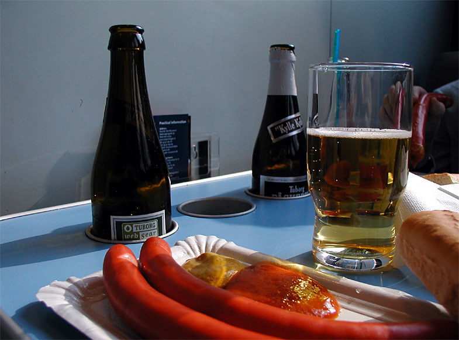
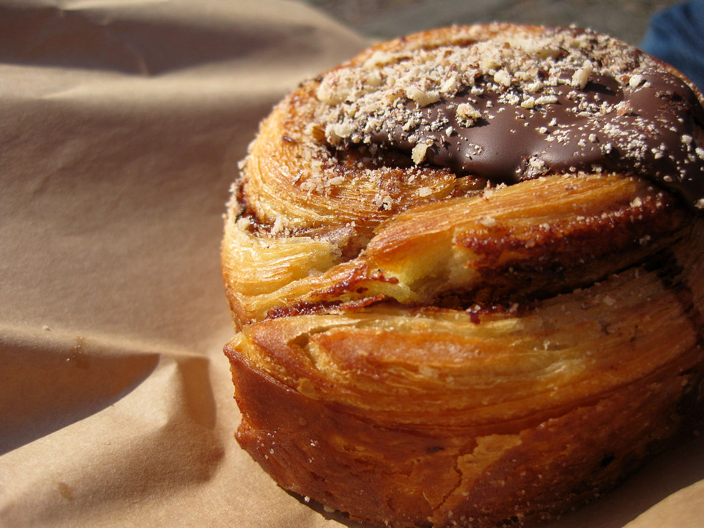

- Visos šios kelionės vietos yra kompaktiškame Kopenhagos centre ir lengvai pasiekiamos pėsčiomis arba metro M2 linija -- automobilio nuomoti nereikia.
- Paskutinę dieną iki skrydžio nuo atvykimo į oro uostą turėsite apie 2 val. 15 min. -- neuždelskite išsiregistravimo iš apartamentų, kad liktų patogus laiko rezervas saugumo patikrai.
- Tarp Nyhavn, Amalienborgo, Rosenborgo ir Torvehallerne galima lengvai vaikščioti pėsčiomis -- atstumai tik 1-2 km.
- Į Deep Purple koncertą Royal Arena geriausia važiuoti metro tiesiai iki Ørestad stotelės; po koncerto grįžtant patariama eiti link Vestamager stotelės, kur būna mažiau žmonių.
1 diena – Atvykimas ir Kopenhagos klasika (Nyhavn, Amalienborg, Rosenborg)
🧭 Dienos maršrutas Google Maps


🍲 Vakarienė: Christianshavns Færgecafé – jauki, su jūrine atmosfera užeiga tiesiai ant kanalo kelios minutės nuo nakvynės, ~40 €/asm. Smėrrebrėdas ir namuose gaminta snapsas, šiek tiek kainuoja daugiau, bet autentiška. Žemėlapyje
🌧 Planas B (jei blogas oras)
Kodėl: Nyhavn kanalo apžiūra ir Amalienborgo sargybos keitimasis vyksta lauke – liūtyje ar vėjyje stovėti aikštėje nemalonu, o nuotraukos nepavyks.
1 diena (atsarginis planas) – Amalienborgo muziejus vietoj lauko stotelių
Bendras persikėlimų laikas: apie 31 min. Diena baigiasi toje pačioje vietoje kaip ir pagrindiniame plane – Torvehallerne.
🧭 1B dienos maršrutas Google MapsPatarimas: Bilietus į Amalienborgo muziejų verta pirkti iš anksto denkongeligesamling.dk svetainėje – kasoje gali susidaryti eilė po stogu nesant kur pasislėpti nuo lietaus.
2 diena – Christiania, muziejai ir Tivoli
🧭 Dienos maršrutas Google Maps


🌧 Planas B (jei blogas oras)
Kodėl: Christiania – pasivaikščiojimas lauko gatvėmis, ir Tivoli parkas – lauko atrakcionai bei sodas; abu jautrūs lietui ir vėjui.
2 diena (atsarginis planas) – daugiau laiko po stogu Christianijoje ir Tivoli uždarose salėse
Bendras persikėlimų laikas: apie 7 min. Diena baigiasi toje pačioje vietoje kaip ir pagrindiniame plane – Tivoli parke.
🧭 2B dienos maršrutas Google MapsPatarimas: Stipraus vėjo atveju Tivoli atrakcionai laikinai uždaromi – prieš einant patikrinkite parko statusą tivoli.dk svetainėje ar programėlėje.
3 diena – Kanalų kelionė, Torvehallerne ir Deep Purple koncertas
🧭 Dienos maršrutas Google Maps


🌧 Planas B (jei blogas oras)
Kodėl: Kanalų ekskursija laivu – nors valtys uždaros ir šildomos, stipriame vėjyje (diena su 80% kritulių tikimybe) tokie plaukimai dažnai atšaukiami arba supami nemaloniai.
3 diena (atsarginis planas) – Kunsthal Charlottenborg vietoj laivo kelionės
Bendras persikėlimų laikas: apie 17 min. Diena baigiasi toje pačioje vietoje kaip ir pagrindiniame plane – Royal Arenoje.
🧭 3B dienos maršrutas Google MapsPatarimas: Kunsthal Charlottenborg sekmadieniais atsidaro tik 11:00 – nevažiuokite prie Nyhavn per anksti, geriau ilgiau pabūkite prie pusryčių apartamentuose.
4 diena – Atsisveikinimas su Christianshavn ir skrydis namo
🧭 Dienos maršrutas Google Maps


🌧 Planas B (jei blogas oras)
Kodėl: Paskutinis pasivaikščiojimas palei Christianshavno kanalus – lauko veikla, nemaloni lyjant prieš kelionę į orauostą su bagažu.
4 diena (atsarginis planas) – Vor Frelsers bažnyčia vietoj kanalo pasivaikščiojimo
Bendras persikėlimų laikas: apie 19 min. Diena baigiasi toje pačioje vietoje kaip ir pagrindiniame plane – Kopenhagos oro uoste.
🧭 4B dienos maršrutas Google MapsPatarimas: Bažnyčios vidus lankytojams atviras 11:00–15:30 kasdien (ir pirmadieniais) – atvykite ne anksčiau 11:00; į bokštą vėjuotą dieną nelipkite, jis gali būti uždarytas saugumo sumetimais.
🗺️ Žemėlapis
💰 Biudžeto suvestinė (4 keliautojai)
| Kategorija | Min | Tikėtina | Maks. |
|---|---|---|---|
| Skrydžiai | 476 € | 476 € | 476 € |
| Registruotas bagažas (priedas) | 0 € | 160 € | 320 € |
| Nakvynė (3 naktys) | 435 € | 535 € | 635 € |
| Maistas | 520 € | 890 € | 1 040 € |
| Bilietai (Rosenborg, Glyptotek, Tivoli, kanalų kelionė) | 416 € | 554 € | 610 € |
| Deep Purple koncertas | 304 € | 360 € | 400 € |
| Iš viso (4 žm.) | ~2 151 € | ~2 975 € | ~3 481 € |
| Vienam asmeniui | ~538 € | ~744 € | ~870 € |
Automobilis nenuomojamas – viskas pasiekiama pėsčiomis ir metro, todėl automobilio ir kuro išlaidų nėra.
Skrydžio kaina apima tik rankinį bagažą/1 daiktą žmogui – jei kuriam nors keliautojui reikės registruoto bagažo, priskaičiuokite priedą (orientaciniai 0–320 € visai grupei).
⚠️ Koncerto bilietus patariame pirkti iš anksto – perpardavimo rinkoje kainos jau kyla, oficialūs bilietai dar prieinami pigiau.
☁️ Orų prognozė
23-10 · Kopenhaga (Christianshavn)
Dulksna, 8.6–11.2°C
Lietaus tikimybė: didelė (apie 8.7 mm kritulių) · Vėjas iki 40 km/h
24-10 · Kopenhaga (Christianshavn)
Kartais lyja, 8.8–12.9°C
Lietaus tikimybė: 40% · Vėjas iki 31 km/h
25-10 · Kopenhaga (Christianshavn)
Dažnai lyja, 9.4–11.7°C
Lietaus tikimybė: 80% · Vėjas iki 29 km/h
26-10 · Grįžtama į Kauną
Kartais lyja, 8.3–11.3°C
Lietaus tikimybė: 40% · Vėjas iki 24 km/h
🎒 Ką pasiimti
- Danija nėra euro zonoje – atsiskaitymai vyksta danų kronomis (DKK), bet kortelė priimama beveik visur.
- Visi skysčiai rankiniame bagaže – ne daugiau 100 ml talpykloje, sudėti į vieną 1 l permatomą maišelį.
- 80% lietaus tikimybė 3-ią dieną (10-25) – planuojant koncertą vakare, apsirenkite sluoksniais ir pasiimkite neperšlampamą striukę vietoj skėčio, jei bus vėjas.
- Metro ir autobusų bilietus patogu pirkti DOT Rejsekort programėlėje telefone – nereikia atsiskaitymo kortelės terminale.
Dokumentai ir pinigai
Drabužiai ir avalynė
Kelionės reikmenys
Higiena ir sveikata
🍴 Kur pavalgyti
1 diena
Ida Davidsen – netoli Amalienborgo pilies (pietūs po sargybos keitimosi) · smørrebrødo restoranas (veikia nuo 1888 m., penkios kartos) · ~35 €/asm.
Legendinis smėrrebrėdo restoranas su milžinišku meniu – geriausia paklausti dienos pasiūlymo, kuris paprastai pigesnis už meniu kainą. Žemėlapyje
Pølsevogn prie Nyhavn – netoli Nyhavn kanalo · gatvės maisto vežimėlis (dešrainiai) · ~6 €/asm.
Klasikinis raudonas daniškas dešrainių vežimėlis – greitas ir labai pigus užkandis tarp Nyhavn ir Amalienborgo. Žemėlapyje
Lagkagehuset (Torvehallerne) – netoli Torvehallerne prekyvietės · kepyklėlė (daniški kepiniai) · ~6 €/asm.
Populiarus daniškas kepyklos tinklas – puikios kanelio sruogelės ir kiti kepiniai kavos pertraukai Torvehallerne viduje. Žemėlapyje
Christianshavns Færgecafé – netoli apartamentų Christianshavn (vakaras po pirmos dienos) · tradicinė kanalo pakrantės užeiga, veikianti daugiau nei šimtą metų · ~40 €/asm.
Jauki, su jūrine atmosfera užeiga tiesiai ant kanalo kelios minutės nuo nakvynės – smėrrebrėdas ir namuose gaminta snapsas, šiek tiek kainuoja daugiau, bet autentiška. Žemėlapyje
2 diena
Morgenstedet – netoli Laisvojo miesto Christiania · vegetariška/veganiška Christianijos virtuvė · ~12 €/asm.
Mažas, namus primenantis vegetariškas valgykla Christianijos viduje – kasdien keičiasi vienas-du dienos patiekalai, priimami tik grynieji pinigai. Žemėlapyje
Slotskælderen hos Gitte Kik – netoli Ny Carlsberg Glyptotek / Danijos nacionalinio muziejaus · smėrrebrėdo restoranas (veikia nuo 1910 m.) · ~30 €/asm.
Šeimyniška, vietinių pamėgta smėrrebrėdo užeiga netoli Christiansborg – geriausia atvykti tiksliai pietų metu, nes dažnai pilna. Žemėlapyje
Café Wilder – netoli apartamentų Christianshavn (vakaras po Tivoli) · jauki Christianshavno bistro/kavinė · ~30 €/asm.
Viena seniausių ir mieliausių Christianshavno kavinių, pilna vietinių nuolatinių lankytojų – trijų patiekalų vakarienės rinkinys pasiūlo gerą santykį kaina/kokybė. Žemėlapyje
3 diena
Hallernes Smørrebrød (Torvehallerne) – netoli Torvehallerne prekyvietės (pietūs po kanalų ekskursijos) · turgaus smėrrebrėdo prekystalis · ~15 €/asm.
Geriausia kasdieninė smėrrebrėdo vieta Kopenhagoje – 15-20 rūšių ant rupios ruginės duonos, be rezervacijos, galima valgyti prie bendrų stalų. Žemėlapyje
PULS Kitchen & Bar – netoli Royal Arena (prieš Deep Purple koncertą) · greitas patiekalas/gastrobaras prieš koncertą · ~25 €/asm.
Vos kelios minutės pėsčiomis nuo Royal Arena – patogu užkąsti prieš 18:00 durų atidarymą, kad nereikėtų skubėti po koncerto. Žemėlapyje
Baras
Hviids Vinstue – netoli Nyhavn kanalo / Kongens Nytorv (1 diena)
Seniausias nenutrūkstamai veikiantis baras Kopenhagoje – toje pačioje rūsio patalpoje nuo 1723 m., išgyvenęs didžiuosius gaisrus, karus ir okupaciją. Garsus rytiniu smėrrebrėdu ir namie gamintu karštu vynu (gløgg). Žemėlapyje
🍽️ Ką paragauti

Smėrrebrėdas
Atviras ruginės duonos sumuštinis su įvairiais priedais – nuo marinuotos silkės iki roast beef ar krevečių su majonezu. Danijos virtuvės simbolis, dažniausiai valgomas pietums.
8–25 €Kur paragauti: Ida Davidsen, Slotskælderen hos Gitte Kik, Hallernes Smørrebrød (Torvehallerne)

Frikadelės
Keptos kiaulienos ir jautienos mėsos kukulės, tradiciškai patiekiamos su ruginės duonos riekele, raudonųjų kopūstų salotomis ar agurkėliais.
10–18 €Kur paragauti: Slotskælderen hos Gitte Kik, Café Wilder

Kepta kiauliena su gruzdintais lupenomis
Kepta kiaulienos mentė su traškia odele, patiekiama su virtomis bulvėmis, raudonaisiais kopūstais ir padažu – vienas labiausiai mylimų Danijos patiekalų.
16–28 €Kur paragauti: Christianshavns Færgecafé, Café Wilder

Marinuota silkė
Marinuota arba kepta silkė su svogūnais ir garstyčiomis – klasikinis smėrrebrėdo priedas, dažnai patiekiamas su snapsu.
8–16 €Kur paragauti: Ida Davidsen, Hallernes Smørrebrød (Torvehallerne)

Raudonoji dešrelė
Ryškiai raudona virta dešrelė bandelėje su garstyčiomis, kečupu, keptais svogūnais ir marinuotais agurkėliais – pigiausias karštas užkandis gatvėje.
4–7 €Kur paragauti: Pølsevogn prie Nyhavn

Kanelio sruogelė
Minkšta, saldi kepinio sruogelė su cinamono įdaru – populiariausias daniškas kepinys kavos pertraukai.
3–6 €Kur paragauti: Lagkagehuset (Torvehallerne)
ℹ️ Praktinė informacija
- ✈️ Skrydis į Kopenhagą
- FR6156 (Ryanair), KUN 09:10 → CPH 09:40, 2026-10-23
- ✈️ Skrydis namo
- FR6155 (Ryanair), CPH 15:15 → KUN 17:45, 2026-10-26
- 🚗 Automobilis
- Nenuomojamas – visa kelionė pėsčiomis ir metro
- 🏠 Nakvynė
- Apartamentai su kanalo vaizdu, Christianshavn (3 naktys)